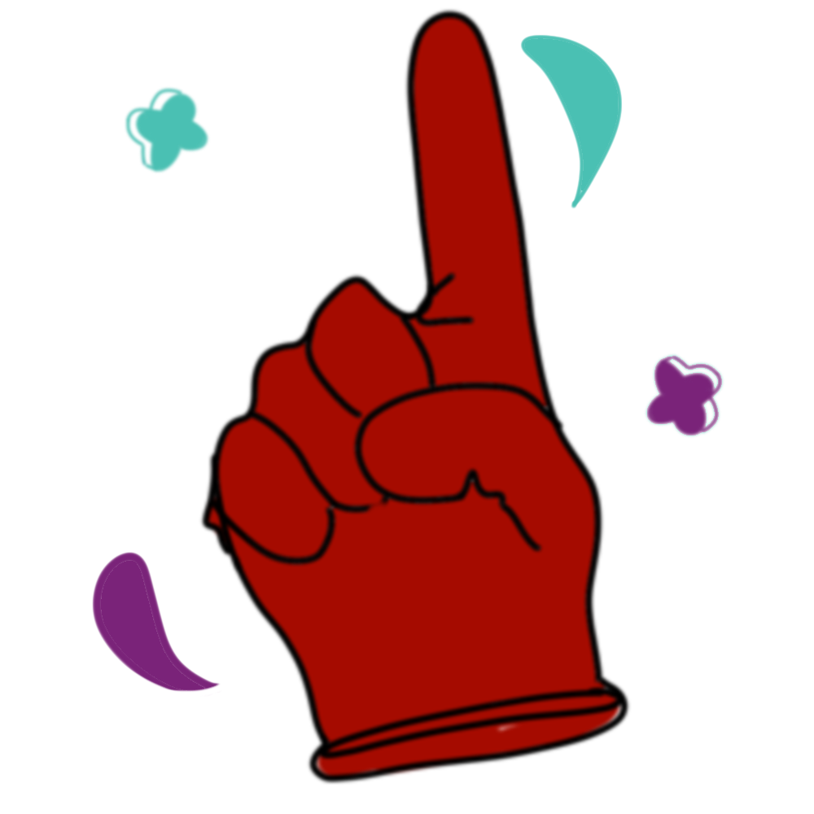

Top five sports things I’ll do when COVID-19 is over
For the last 11 months I’ve been dreaming of the day I can get back to enjoying what I love most: sports
A year ago, Utah Jazz star Rudy Gobert touched every journalists’ microphone during a media availability and subsequently contracted COVID-19 later that same week. Soon after, the sports world shut down and ruined what was going to be a great year for sports—on an international scale as well as right at Ryerson. It’s been over one year without intramurals, dedicated gym time and weekends at the Mattamy Athletic Centre watching the Rams. Here’s a list of things that I will be doing when things get back to normal post-pandemic.

1. Compete with my friends
By far the best part of sports is friendships. So many of my close friends became like family to me through sports. Pre-pandemic, when I would come back to my hometown from university, my high school friends and I would always get together for friendly games of all kinds including basketball, soccer and volleyball. You name it and we’ve probably done it. Once it’s permitted, you better believe I’ll be out playing with my friends immediately.
2. See a game in person
When fans are allowed back in Canadian stadiums, I will be among the first to go to a live sporting event. Some of my best memories from living in Toronto have been watching live games whether it be the Toronto Raptors or even the Canadian men’s soccer national team. They became something I would look forward to once or twice every semester and without them, it feels like the semesters have been dragging on. The atmosphere, the singing, the cheering, the chanting and even the occasional booing at the referees always makes for an unforgettable experience; something I truly miss.
3. Hit the gym
As a student, it’s difficult to take care of your health sometimes, be it physical or mental. One thing that helps my overall wellness is going for a workout at the gym. Without it, I find myself being less productive, less confident and far less energetic. An hour or two at a gym, lifting weights with music in my ears, by myself yet simultaneously surrounded by other people with similar mindsets, is something I often self-prescribe to cure the mid-semester blues.
4. Game nights
Watching the Super Bowl with just my parents was an odd experience—still very fun, but definitely not comparable to what it was like before the pandemic with friends. Once we can get back together in groups, it doesn’t matter what the sport is, I’ll be buying all the snacks and will be putting on a big game night with the homies. I miss the banter, picking teams, inventing drinking games and cheering against your friends, lording over them if your team wins or pretending you never cared when your team loses. Regardless of the outcome, having friends around for the big games is an unparalleled feeling.

5. Intramurals
Intramurals were one of the best ways for me to meet people on campus and feel comfortable in a big city after moving across the country from a small town. Playing basketball or futsal in the gym was where I felt the most comfortable and safe. It was something to look forward to every week and the connections that you can make through intramurals are something that makes your university experience so much better. As soon as intramurals are available, I’ll be signing up for as many as I can!